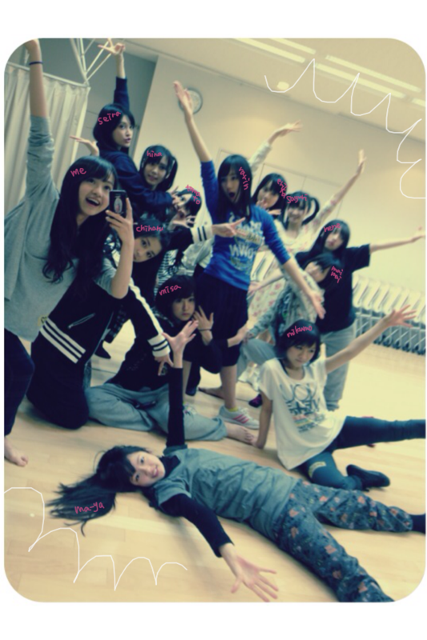

| 2012/01 14 Sat | 51回目*marika |
まりかです
まりりんです
まりたんです
まりちゃんです
ベビたんです
気づけば、51回目*
いつも読んでくださってる方、
初めて読んでくださった方、
コメントしてくださった方、
ありがとうございます♪
なんか久しぶりに更新した気がする><
さぁ!まりかの時間だよ=3←

めっちゃ楽しそうでしょ~^^うっふ-
Lesson前に
「みんなこっち向いてポーズとって!」
てゆったら、笑。
ノリいいなあ。
乃木メンはみーーーんな
かっわいくて
やっさしくて
おもっしろくて
だいだいだいだいすきなんです♡
もちろん、みなさんも
だいだいだいだいすきー ♡♡
ファミリーだねっ!
みなさん
スタッフさん
メンバー
みんなの家族
乃木坂ファミリーだ☆
........................
・ひょっとして、留学とかしたことあるの？
海外は割とたくさん行ってる方？
いやいやいやっ!!
海外.....ちっちゃい頃に
グアムに行った記憶が...
全然ないですよ〜
・iPhoneのカバーよかったらどこのか教えて！
atomosっていうショップに
ありました。
でもこれはCRIMIEというブランドのカバーです。
このイラストかわいい!!
て即決で即買いしました。
シールなんです^^*
頑張って買いました=3
・部屋のコーディネートって
なんか雑誌参考にしてる？
してたらその雑誌教えて欲しい！
:アシェット婦人画報社
: 主婦の友社
のパリのシリーズ本!!
とか
モロッコ、メキシコとかの本
インテリア本を参考にしてます:D♡
・襟付きのどこで買ったの？
『bulle de savon』
というブランドで^^
セールでした☆
・自分を動物に例えるなら何？
なんだろ。
昔はリスに似てるって言われてました＊
今は...何に似てるんかな!?
・iphoneのカバー何の柄？
マリア様のイラストです♡
色合いがきれいなんです:)
・どこか海外には行ったことある？
グアムに1回だけ><
・『乃木坂って どこ？』司会の
バナナマン、設楽さんと日村さん。
このお二方はベビたんから見てどんな印象？
ＴＶで見たのとそのままだな
と思いました!!
とっっても優しくてとっってもおもしろいです^^
・名古屋は好きですか？(笑)
休みの日に車で大阪に帰るときに通るけど
名古屋行ったことないんです;(
手羽先めっちゃおいしいですよね♡
はまった♪
行っておいしいものいっぱい食べたいな*
・｢♪まめちょこω♪｣
このニックネームどうですか？(笑)
かわいいですよ♪
なんか..麦チョコ食べたくなるっ♡←
・メキシコに行きたい理由は？
雑貨、インテリアがめちゃくちゃかわいいから♡
街もカラフルらしいですxD!!
・プライベートではストレート？
それともやや巻いてるの？
ほとんど何もいじらないから
ストレート...かなぁ。
う〜ん、でもちょとクセ毛なんです;(
すんご--くゆるいS字になる笑
まぁ、それも無造作ですきかな♪
・べびたんのAKBのライバルはだれ？
AKB48さん全員ライバルです!!
・オシャレになるにはどうすればいいかな？
そんなに参考になるようなことは言えませんが
おもいきって好きなものを
着るのがいいと思います><
普段の服装に、明るい色の小物とか
身につけるだけでオシャレになると思います!
小物といっても、靴下でも、靴でも:D
少し変えるだけで見た目が変わると思います＊
・口内炎は良くなった？
みなさんご心配をおかけしてます><
フルーツを食べたら
うぁぁあぁ
てしみるんですよ。
(特にグレープフルーツとパイナップル)
こりゃあ痛いです。
くすり飲もう...
今日はここまでっ
........................
乃木坂46デビュー曲
ついに…‼
『ぐるぐるカーテン』
みなさんは聴きましたか⁇
女の子どうしの秘密の曲♪
とってもかわいらしい曲です。
おもわず、口ずさんじゃうね^^*
乃木坂46が本格的に動き始めました。
♪♫~♩
ふっふふーふ
ふっふふーふ
ふふふふふーふふ、ふ、ふ。
ちょっこれいと
ちょっこれいと
ちょこれいとーはめ、い、じ。
ちょっこれいと
ちょっこれいと

ちょこれいとーはめ・い・じ♪
チョコレート昔からだいすき♡♡
ここでチョコの話＊
私はチョコの中でも
ビターチョコが特にすきです。
えっ？大人っぽい？？
えっへへへ←
みなさんはチョコ。
ミルクかビターかホワイトかハイミルクか
どれが一番すきですか^^***
みんなお疲れさまりか ☆
今日も元気に頑張りまりか ☆☆
風邪ひかないようにしよ---うっ:)
LOVE

ベビたん*****bA by marika